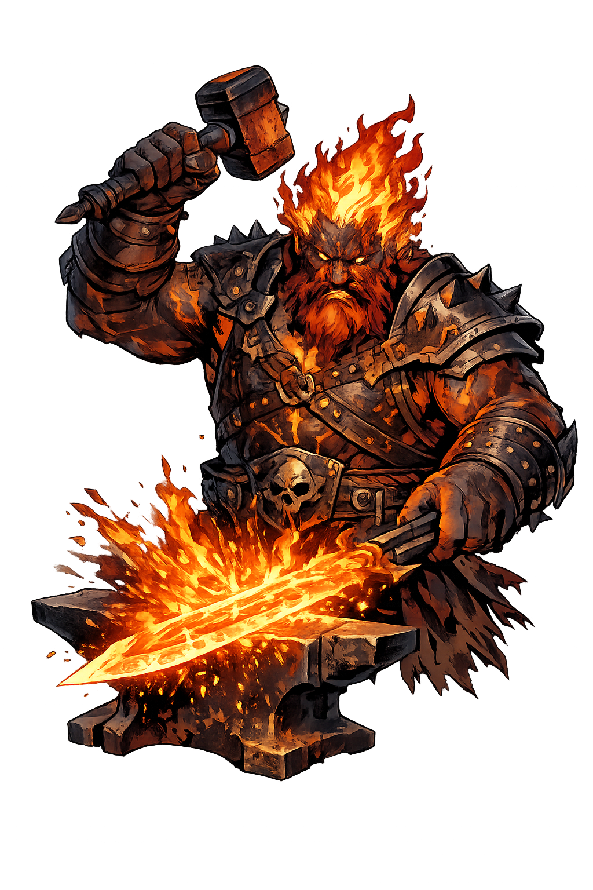
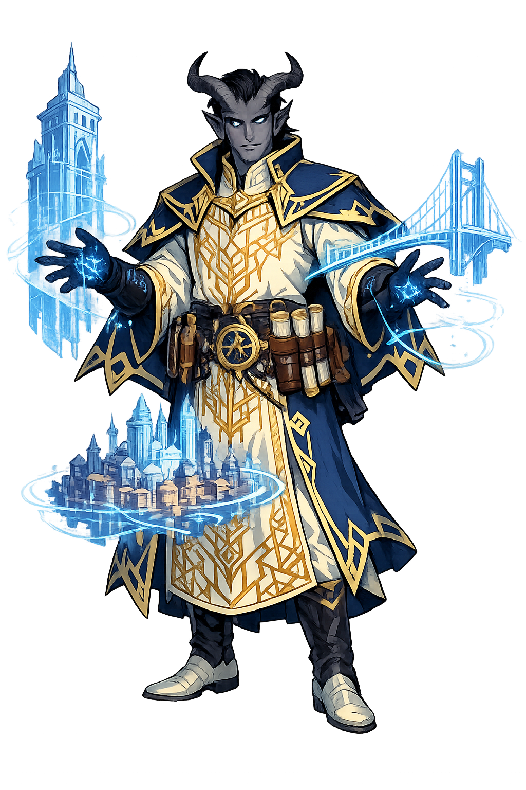

Status
LoneForge is currently in active development. The core engine is available as an open-source repository on GitHub, where you can explore the code and contribute if you wish.
A working prototype is available for testing via Node.js, but the long-term goal is to make LoneForge fully accessible to everyone — no setup required.
GitHub Repository
You can find the current version of LoneForge here:
What’s Next
The next steps include building a browser-based interface, expanding the procedural engine, and improving usability for non-technical players. Stay tuned — the Forge is just getting started.